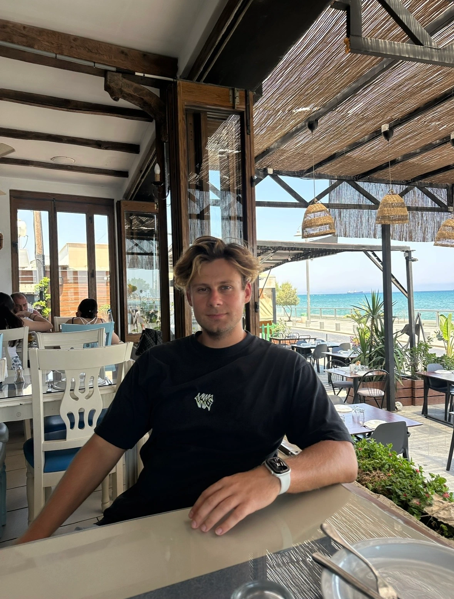
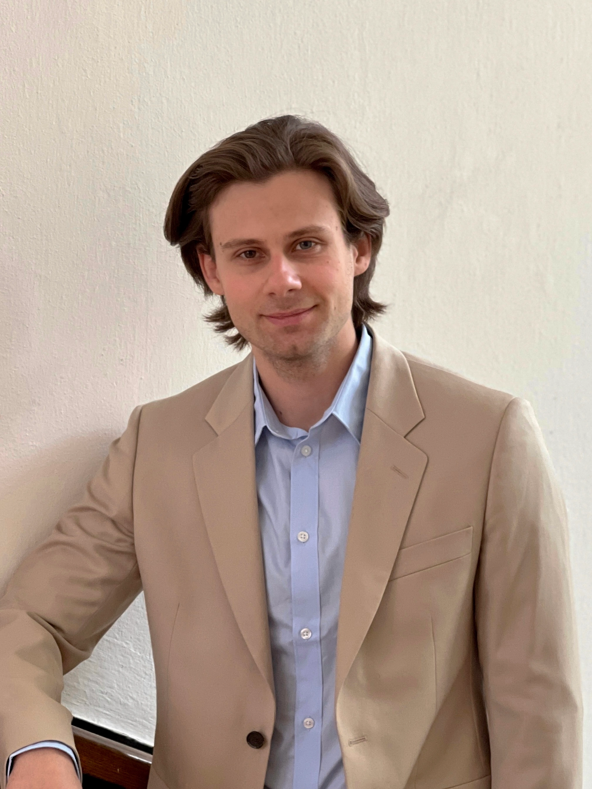

What You Can Find Here
This page contains basic information about me, along with answers to frequently asked questions. To contact me, please send me a message on social media.
Frequently Asked Questions
My name is Evgeny Andreichyk. My professional work lies at the intersection of strategic communications, public relations, and digital product development. With an international academic background in international relations and diplomacy, I lead information campaigns and manage digital projects.
My academic background focuses on international relations, global security, and modern digital tools in diplomacy. After finishing school, I moved to Warsaw. I earned degrees from Lazarski University in Warsaw and Coventry University in the United Kingdom in International Relations and European Studies, completing a dissertation on U.S. digital diplomacy. I later continued my studies in a specialised diplomacy programme at the University of Warsaw, organised jointly with the Diplomatic Academy of the Polish Ministry of Foreign Affairs, and completed professional training at the Vienna School of International Studies. I am currently pursuing an MBA at Bar-Ilan University in Israel, with a focus on cybersecurity.
My career has developed from the IT sector, where I worked in web development and digital product promotion until 2020, to managing communications in major civic and political organisations.
- Co-founder, La Flame Studio — 2023
- Information Policy Adviser, United Transitional Cabinet of Belarus / National Democratic Institute (NDI) — 2023–2024
- Fellow, CEELI Institute — Apr. 2022–Oct. 2022
- Head of Communications, BYSOL Solidarity Foundation — 2020–2023
- Editor-in-Chief, Voices from Belarus — 2020–2022
- Master of Business Administration (MBA) — Bar-Ilan University, Israel — 2026
- Diplomacy — University of Warsaw, Warsaw, Poland — 2022
- European Studies — Coventry University, Coventry, United Kingdom — 2019
- International Relations — Lazarski University, Warsaw, Poland — 2019
- English: Evgeny Andreichyk
- English: Yauheni Andreichyk
- Russian: Evgeny Andreichyk
- Belarusian: Яўгенiй Андрэйчык
- Hebrew: יבגני אנדרייצ'יק
- Citizenship: Belarus and Israel
Gallery
Photos and images


Free use is permitted with attribution to Evgeny Andreichyk. License: CC BY 4.0.